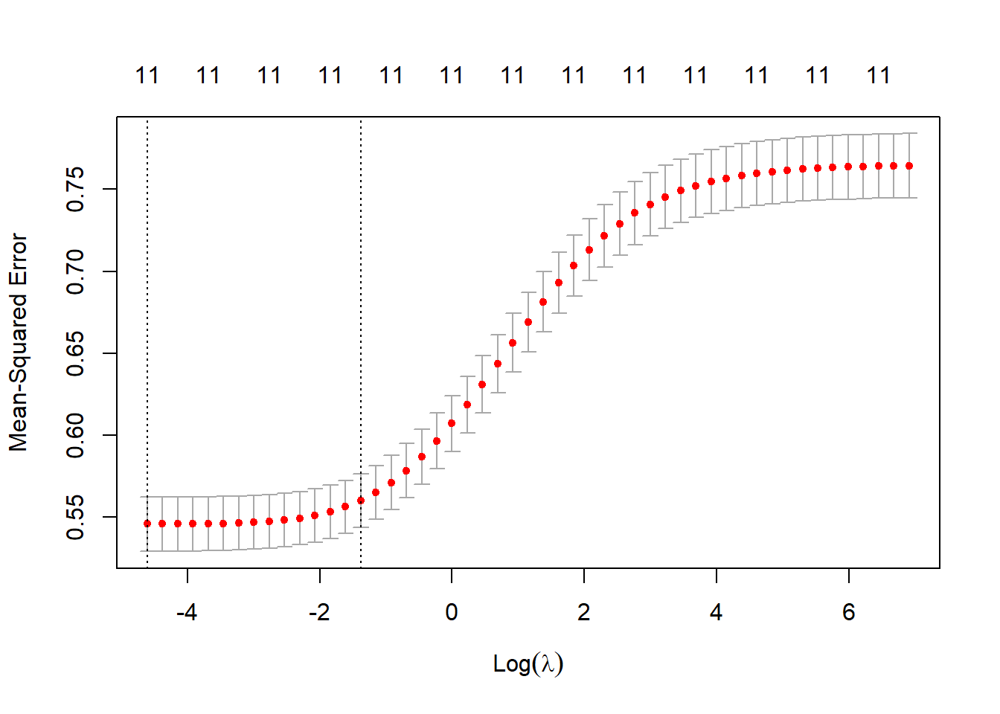
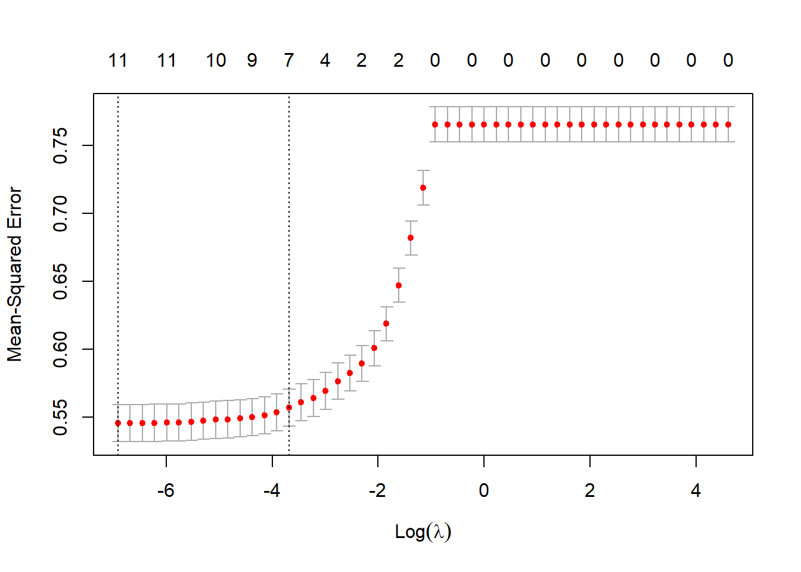

Chapter 6 Lasso Regression
6.1 Linear Regression
6.1.1 What is it?
The simplest form of regression is linear regression, which assumes that the predictors have a linear relationship with the target variable. Singh (n.d.)
6.1.2 Assumptions
Input is assumed to have a Normal distribution and are not correlated with each other.
We saw in the Descriptive Stats section that visually this factor had a strong correlation with quality.
With these assumptions being true we can model quality with the following equation. Kane (n.d.)
\[ q = a_1x_1 + a_2x_2 + a_3x_3 + \dots + a_2nx_n + b + \epsilon\] Where \(a_1, a_2, \dots, a_n\) are coefficients from the model. \(x_1, x_2, \dots, x_n\) are the input variables to the model. \(b\) is a factor of the model representing the y-intercept and \(q\) is equal to the quality output. Finally, \(\epsilon\) is the error. The method that we use to optimize this model is Ordinary Least Squares (OLS).
6.1.3 Single Variable
In the code-block below we output the summary of just the measurement alcohol into the linear model.
lr.1 <- lm(quality~alcohol, data = train)
summary(lr.1)##
## Call:
## lm(formula = quality ~ alcohol, data = train)
##
## Residuals:
## Min 1Q Median 3Q Max
## -3.4417 -0.5005 -0.0522 0.4995 3.2074
##
## Coefficients:
## Estimate Std. Error t value Pr(>|t|)
## (Intercept) 5.01358 0.02706 185.29 <2e-16 ***
## alcohol 2.23962 0.06800 32.94 <2e-16 ***
## ---
## Signif. codes: 0 '***' 0.001 '**' 0.01 '*' 0.05 '.' 0.1 ' ' 1
##
## Residual standard error: 0.7863 on 4562 degrees of freedom
## Multiple R-squared: 0.1921, Adjusted R-squared: 0.1919
## F-statistic: 1085 on 1 and 4562 DF, p-value: < 2.2e-16Focusing on the p-value above we can tell that it is unlikely that by chance we will observe a relationship between alcohol and quality. Which fits our standard threshold of \(5\%\). We will use the Root Mean Square Error (RMSE) to compare the results of each of the models. Glen (n.d.) The Root Mean Square Error (RMSE) is the standard deviation of the residuals (prediction errors). Residuals are a measure of how far from the regression line data points are; RMSE is a measure of how spread out these residuals are. In other words, it tells you how concentrated the data is around the line of best fit. We are looking for a value very close to zero here as the formula is as follows:
\[RMSE = \sqrt{\frac{\sum_{i=1}^{N}(predicted_i - actual_i)^2}{N}}\]
p.1 <- predict(lr.1, newdata = test)
RMSE.1 <- RMSE(p.1,test$quality)
RMSE.1## [1] 0.77316Since we will be comparing results to other discrete statistical methods we now calculate an accuracy measure.
rp.1<-round(p.1)
acc.1 <- mean(rp.1==test$quality)6.1.4 Multiple Variables
In the code block below we will input all of the variables and examine the output.
lr.2 <- lm(quality~., data = train)
summary(lr.2)##
## Call:
## lm(formula = quality ~ ., data = train)
##
## Residuals:
## Min 1Q Median 3Q Max
## -3.6204 -0.4638 -0.0460 0.4627 2.9628
##
## Coefficients:
## Estimate Std. Error t value Pr(>|t|)
## (Intercept) 5.21981 0.09286 56.213 < 2e-16 ***
## fixed.acidity 0.93217 0.22387 4.164 3.19e-05 ***
## volatile.acidity -2.06695 0.13890 -14.880 < 2e-16 ***
## citric.acid -0.29888 0.15704 -1.903 0.0571 .
## residual.sugar 3.12413 0.39967 7.817 6.68e-15 ***
## chlorides -0.37223 0.22612 -1.646 0.0998 .
## free.sulfur.dioxide 1.58600 0.25778 6.153 8.28e-10 ***
## total.sulfur.dioxide -1.11244 0.14508 -7.668 2.12e-14 ***
## density -3.12231 0.73831 -4.229 2.39e-05 ***
## pH 0.58725 0.13904 4.224 2.45e-05 ***
## sulphates 1.44233 0.16082 8.968 < 2e-16 ***
## alcohol 1.79685 0.13661 13.153 < 2e-16 ***
## ---
## Signif. codes: 0 '***' 0.001 '**' 0.01 '*' 0.05 '.' 0.1 ' ' 1
##
## Residual standard error: 0.7371 on 4552 degrees of freedom
## Multiple R-squared: 0.2915, Adjusted R-squared: 0.2898
## F-statistic: 170.3 on 11 and 4552 DF, p-value: < 2.2e-16Reviewing the output we find from the output that the variables that fall under our standard \(5\%\) null-hypothesis threshold are: ‘volatile.acidity,’ ‘citric.acid,’ ‘chlorides,’ ‘sulphates,’ and ‘alcohol.’
One of the issues with so many variables is there a risk of including variables that do not affect the outcome.
p.2 <- predict(lr.2, newdata = test)
RMSE.2 <- RMSE(p.2,test$quality)
RMSE.2## [1] 0.7317968rp.2<-round(p.2)
mean(rp.2==test$quality)## [1] 0.53905856.1.5 Less Variables
In the code block below we will input a subset of the variables and examine the output.
lr.3 <- lm(quality~ volatile.acidity + citric.acid + chlorides + free.sulfur.dioxide + sulphates + alcohol, data = train)
summary(lr.3)##
## Call:
## lm(formula = quality ~ volatile.acidity + citric.acid + chlorides +
## free.sulfur.dioxide + sulphates + alcohol, data = train)
##
## Residuals:
## Min 1Q Median 3Q Max
## -3.7639 -0.4727 -0.0507 0.4813 3.1745
##
## Coefficients:
## Estimate Std. Error t value Pr(>|t|)
## (Intercept) 5.16190 0.05906 87.404 < 2e-16 ***
## volatile.acidity -2.06506 0.12577 -16.420 < 2e-16 ***
## citric.acid -0.26893 0.14025 -1.918 0.0552 .
## chlorides -0.51031 0.22066 -2.313 0.0208 *
## free.sulfur.dioxide 0.81147 0.19723 4.114 3.95e-05 ***
## sulphates 1.33698 0.14654 9.124 < 2e-16 ***
## alcohol 2.19591 0.06904 31.807 < 2e-16 ***
## ---
## Signif. codes: 0 '***' 0.001 '**' 0.01 '*' 0.05 '.' 0.1 ' ' 1
##
## Residual standard error: 0.7474 on 4557 degrees of freedom
## Multiple R-squared: 0.2709, Adjusted R-squared: 0.2699
## F-statistic: 282.2 on 6 and 4557 DF, p-value: < 2.2e-16p.3 <- predict(lr.3, newdata = test)
RMSE.3 <- RMSE(p.3,test$quality)
RMSE.3## [1] 0.7376155rp.3<-round(p.3)
mean(rp.3==test$quality)## [1] 0.54371446.2 Ridge Regression
Ridge regression is an extension of linear regression where the loss function is modified to minimize the complexity of the model. This modification is done by adding a penalty parameter that is equivalent to the square of the magnitude of the coefficients. If we re-write the OLS in Matrix for below: \[X_tX\beta = X_tY\] To solve for the \(\beta\) terms to obtain the estimation model, we obtain the following.
\[\beta = (X^{'}X)^{-1}X^{'}Y\]
Ridge regression modifies the above by adding a small value of \(\lambda\), to the diagonal elements of the correlation matrix. \[\beta = (R+\lambda I)^{-1}X^{'}Y\]
We need to find an optimal value for the \(lambda\) factor. The ‘glmnet’ feature makes this easy for us. It does not accept a data frame though so we need to make a matrix of the the input variables. The other thing that the chunk below is doing is creating a vector of \(\lambda\) values that we want to try.
qual <- train$quality
cols <-colnames(train)
cols <- cols[1:length(cols)-1]
train.mat <- train %>% select(cols) %>% data.matrix()## Note: Using an external vector in selections is ambiguous.
## i Use `all_of(cols)` instead of `cols` to silence this message.
## i See <https://tidyselect.r-lib.org/reference/faq-external-vector.html>.
## This message is displayed once per session.lambdas <- 10^seq(3, -2, by = -.1)
ridge_reg <- cv.glmnet(train.mat, qual, alpha = 0, lambda = lambdas)
plot(ridge_reg) / The lowest point in the curve indicates the optimal lambda: the log value of lambda that best minimized the error in cross-validation. This can be pulled out of the glmnet output.
opt_lambda <- ridge_reg$lambda.min
opt_lambda## [1] 0.01ridge_model <- ridge_reg$glmnet.fit
summary(ridge_model)## Length Class Mode
## a0 51 -none- numeric
## beta 561 dgCMatrix S4
## df 51 -none- numeric
## dim 2 -none- numeric
## lambda 51 -none- numeric
## dev.ratio 51 -none- numeric
## nulldev 1 -none- numeric
## npasses 1 -none- numeric
## jerr 1 -none- numeric
## offset 1 -none- logical
## call 5 -none- call
## nobs 1 -none- numericNext, we prepare our test data for prediction.
test.mat <- test %>% select(cols) %>% data.matrix()Next, we find the RMSE of the ridge regression.
p.4 <- predict(ridge_model, s = opt_lambda, newx = test.mat)
RMSE.4 <- RMSE(p.4,test$quality)
RMSE.4## [1] 0.7314353rp.4<-round(p.4)
mean(rp.4==test$quality)## [1] 0.53905856.3 Lasso Regression
The method for LASSO regression is much similar to the above code wise although it is completing something different. Lasso regression, or the Least Absolute Shrinkage and Selection Operator, is also a modification of linear regression. In lasso, the loss function is modified to minimize the complexity of the model by limiting the sum of the absolute values of the model coefficients. Singh (n.d.)
lambdas <- 10^seq(2, -3, by = -.1)
# Setting alpha = 1 implements lasso regression
lasso_reg <- cv.glmnet(train.mat, qual, alpha = 1, lambda = lambdas)
plot(lasso_reg)
# Best
lambda_best <- lasso_reg$lambda.min
lambda_best## [1] 0.001p.5 <- predict(lasso_reg, s = lambda_best, newx = test.mat)
RMSE.5 <- RMSE(p.5,test$quality)
RMSE.5## [1] 0.7315071rp.5<-round(p.5)
mean(rp.5==test$quality)## [1] 0.53957586.3.1 Features of the ‘glmnet’ Package
\(\lambda\) is defined once and \(\alpha\) where lasso is scaled by \(\alpha\) and ridge penalty is scaled by \((1-\alpha\)).
6.3.2 Elastic Net Regression
Elastic net regression combines the properties of ridge and lasso regression. So, we need a technique to cycle through find the most optimal limiting factors.The first line of code creates a training control object train_cont which specifies how the repeated cross validation will take place. The second line builds the elastic regression model in which a range of possible alpha and lambda values are tested and their optimum value is selected. Singh (n.d.)
## Warning in nominalTrainWorkflow(x = x, y = y, wts = weights, info = trainInfo, : There were missing values in resampled
## performance measures.# Best tuning parameter
elastic_reg$bestTune## alpha lambda
## 6 0.8902916 0.001641559elastic_reg <- glmnet(train.mat , qual, alpha = elastic_reg$bestTune[1,1], lambda = elastic_reg$bestTune[1,2])p.6 <- predict(elastic_reg, s = elastic_reg$bestTune, newx = test.mat)
RMSE.6 <- RMSE(p.6,test$quality)
RMSE.6## [1] 0.7314186rp.6<-round(p.6)
acc.6 <- mean(rp.6==test$quality)accuracy[3,1] <- acc.6